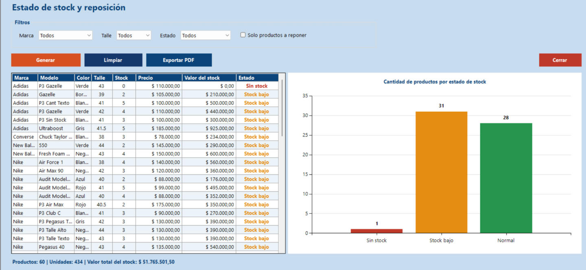

Inicio › Reporte › Estado de stock
Estado de stock
Muestra todo el inventario con su valor y lo clasifica: sin stock, stock bajo o normal. Sirve para decidir qué comprar. Cuando hay productos para reponer, el menú Reporte muestra un triángulo rojo y al iniciar sesión el sistema avisa.
Dónde está: Reporte › Estado de stockLo usa: AdministradorAtajo: F1
Pasá el mouse por encima de cualquier botón o campo de la pantalla para ver qué hace.

Qué hace cada elemento
- 1MarcaMostrá solo una marca. "Todos" muestra todas.
- 2TalleMostrá solo un talle. "Todos" muestra todos.
- 3EstadoFiltrá por Sin stock, Stock bajo o Normal.
- 4Solo productos a reponerSi la tildás, deja solamente lo que hay que comprar: los productos sin stock y los de stock bajo.
- 5GenerarArma el reporte con los filtros elegidos.
- 6LimpiarDeja los filtros como al principio y vacía el reporte.
- 7Exportar PDFGuarda el reporte en PDF. Primero hay que generarlo.
- 8CerrarCierra el reporte y vuelve al menú principal.
- 9Tabla de productosUna fila por producto: marca, modelo, color, talle, stock, precio, valor del stock (precio por unidades) y estado. Rojo: Sin stock. Naranja: Stock bajo. Verde: Normal.
- 10Gráfico por estadoCuántos productos hay en cada estado, de un vistazo.
- 11ResumenTotal de productos, unidades y valor total del stock según los filtros aplicados.
Cómo hacerlo
- Tildá Solo productos a reponer.
- Tocá Generar.
- La tabla muestra los productos sin stock y con stock bajo. Con esa lista armás la solicitud de compra.
Tené en cuenta: Un producto cuenta como stock bajo cuando le quedan 5 unidades o menos.
- Dejá los filtros en Todos.
- Tocá Generar.
- Mirá el resumen de abajo: productos, unidades y valor total del stock.
- Generá el reporte.
- Tocá Exportar PDF y elegí dónde guardarlo.
Para saber más
Mensajes que puede mostrar el sistema 5
| Mensaje | Qué significa y qué hacer |
|---|---|
| AvisoNo hay productos que cumplan con los filtros elegidos. | Cambiá o sacá algún filtro. |
| AvisoPrimero generá el reporte con al menos un producto para poder exportarlo. | Tocá Generar antes de exportar. |
| ListoPDF exportado correctamente: (ruta) | El archivo quedó guardado. |
| ErrorError al exportar PDF: (motivo) | Cerrá el archivo si estaba abierto o elegí otra carpeta. |
| ErrorNo se pudo generar el reporte. El error quedó registrado en la bitácora. | Avisale al administrador. |
Reglas a tener en cuenta 5
- Solo el Administrador puede ver este reporte.
- Sin stock: 0 unidades. Stock bajo: de 1 a 5 unidades. Normal: más de 5.
- Al iniciar sesión, si hay productos a reponer, el sistema lo avisa y te ofrece abrir este reporte. También aparece un triángulo rojo en el menú Reporte, junto a Estado de stock, mientras haya algo para reponer.
- El valor del stock de cada producto es su precio por las unidades disponibles.
- El reporte es de consulta: no modifica ningún dato.
Temas relacionados
SneakRush · Ayuda del sistema · Estado de stock. Podés abrir esta ayuda desde cualquier pantalla con la tecla F1.